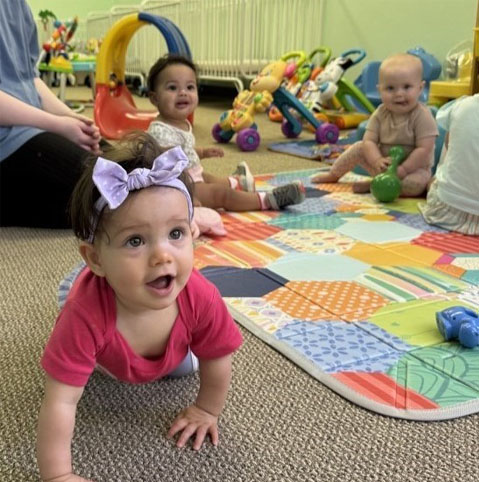

About
Welcome to Bassett Creek Montessori
Welcome to Bassett Creek Montessori, located in Golden Valley, MN, a place where curiosity meets creativity, and young minds flourish. We are dedicated to providing a nurturing and enriching environment that fosters a love for learning from the very start. Our commitment is to create a community where each child's unique potential is recognized and celebrated.
Learn More
